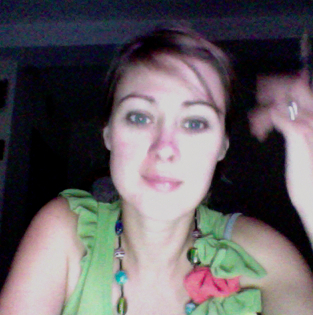

Innovative Technology
for Social Impact
We harness information innovation
to help your social good initiatives
improve their human impact
What we stand for.
iilab - information innovation lab - stands for the respect and development of fundamental rights of communities everywhere around the world. We empower the social economy with innovation and technology.
Unlock Potential
Help bridge the gap between the current use of innovation and technology and their potential to create social impact.
Inspire Talent
Develop new skills for new tools, and help organisations and individuals shift their perspective and harness complex information ecosystems.
Make it Work
Unpack, open and innovate, share experiences and co-create sustainable social impact;


Our Team
We harness multi-disciplinarity, systems and design thinking to create services and products that improve the lives of citizens.

Jun Matsushita CEO, Founder
Jun has been advising international non-profits, humanitarian organisations and media organisations, in the use of innovation and technology for more than 16 years in Paris, New York and London. His technical expertise ranges from system and network administration, web and telephony platforms, to digital security and knowledge management.

Kat Austen Science and Design Lead
Kat is a person. She’s interested in lots of things and phenomena, how things are connected, and why they are connected. She likes patterns but doesn’t have to have them. In the temporal melting-pot of her life so far she has been a scientist, an artist, a journalist and a writer. She welcomes a humane and environmentally kind future.
Samuel Carlisle Hardware Engineering Lead
Electronic Engineer, Activist, Hacker and Maker. #sukey #cryptoparty #hackspace #occupy #hurricanehackers.


Recent Blog Posts
-

-
 03 Jun 2014
03 Jun 2014Tribulations in Open Collaboration, Part 1
open collaboration, collaborative writing, open source, tools
-
 23 May 2014
23 May 2014Getting started on Droplet - An Open Hardware Water Flow Metre
water, bluetooth low energy, open hardware, open design